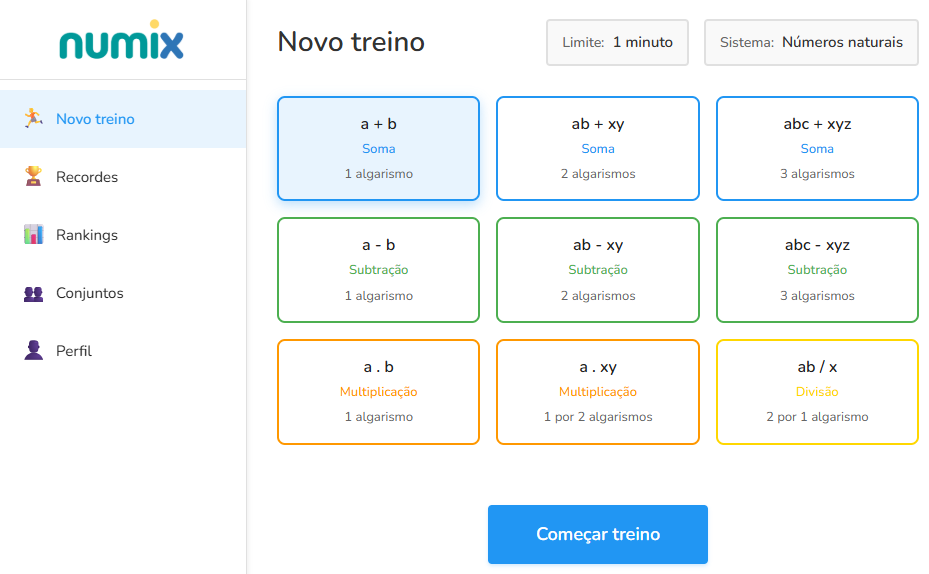

Sobre o sistema
O Numix foi desenvolvido inicialmente para que eu pudesse para melhorar a velocidade nas contas. Com o sistema funcionando, percebi que outros interessados também poderiam usar. É possível praticar diferentes operações matemáticas e comparar com o resultado de outros usuários, vendo assim onde pode melhorar.
Como funciona
Ao acessar o sistema, você pode criar um novo treino escolhendo a operação matemática que deseja praticar.

O sistema registra seus recordes e na página de recordes pode ver quantas contas conseguiu resolver em cada tipo de operação.
Funcionalidades principais
Novo treino
Comece um novo treino escolhendo uma operação
Recordes
Acompanhe seus recordes em cada tipo de operação
Rankings
Veja como você está em relação a outros usuários do sistema
Conjuntos
Crie conjuntos de amigos para comparar seus resultados
Conjuntos
Uma das funcionalidades mais interessantes do Numix é o sistema de conjuntos. Você pode criar conjuntos de usuários e convidar pessoas que conhece para participar.
Há um ranking global, mas dentro de um conjunto você pode comparar seus resultados em cada tipo de operação com seus amigos, familiares ou colegas.
Isso torna a prática de cálculos mais motivadora, pois pode ver quanto ainda pode melhorar no desempenho comparando-se com pessoas próximas. É uma forma divertida de manter a motivação e continuar praticando!
Níveis de dificuldade
Cada nível inclui todas as funcionalidades dos níveis anteriores, além de novas operações e recursos. Todo nível possui um modo aleatório com todas as operações até aquele nível.
Nível natural
- Soma de duas parcelas com até 3 algarismos
- Subtração de duas parcelas com até 3 algarismos
- Multiplicação de duas parcelas com até 3 algarismos
- Multiplicação de 1 algarismo por até 2 algarismos
- Divisão de 2 algarismos por 1 algarismo
Nível inteiro
- Multiplicação de 1 algarismo por 3 algarismos
- Divisão de 3 algarismos por 1 algarismo
- Raiz quadrada de até 2 algarismos
- Conversão de números romanos em naturais (até 2 algarismos)
- Tabuadas do 0 ao 9
Nível decimal
- Multiplicação 2 algarismos por 2 algarismos
- Divisão de 3 algarismos por 2 algarismos
- Raiz quadrada de 3 algarismos
- Soma, subtração e multiplicação com 3 parcelas de 1 algarismo
- Conversão de números romanos em naturais (até 3 algarismos)
Nível binário
- Raiz quadrada de 4 algarismos
- Soma com 3 parcelas de 2 algarismos
- Subtração com 3 parcelas de 2 algarismos
- Multiplicação com 3 parcelas de 2 algarismos
- Conversão de números romanos ou binários em naturais (até 4 algarismos)
Nível hexadecimal
- Soma com 3 parcelas de 3 algarismos
- Subtração com 3 parcelas de 3 algarismos
- Multiplicação com 3 parcelas de 3 algarismos
- Conversão de números romanos, binários ou hexadecimais em naturais (até 4 algarismos)
Benefícios do Numix
- Melhora a agilidade mental
- Desenvolve a capacidade de concentração
- Aumenta a confiança em situações que exigem cálculos rápidos
- Pode ajudar no desempenho acadêmico e profissional
- Mantém o cérebro ativo e saudável
- Proporciona sensação de realização ao superar seus próprios recordes
Quer usar o sistema de graça?
É simples! Basta enviar um email para:
rafael@cinoto.com.brInforme seu nome na mensagem que eu criarei seu usuário e responderei o email com as instruções.